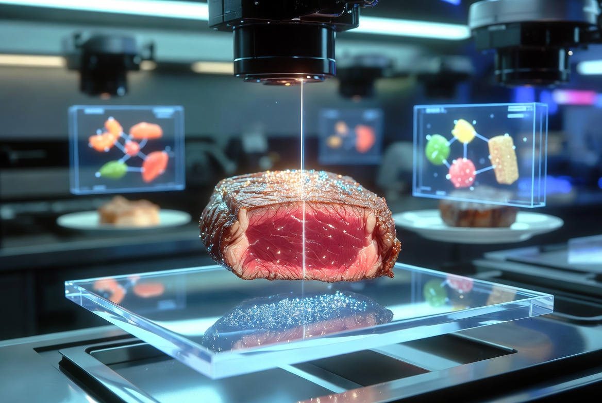

NEXUS-47 量子合成サーloinステーキ

説明
近未来の完全自動化食事システム「NEXUS」が、分子プリンティングとプラズマ加熱技術により瞬時に生成する最適化栄養食です。
人間の手が一切介在せず、AIがその日の生体データ（DNA、腸内フローラ、活動量、気分）を解析して個別にカスタマイズ。
完璧な食感・風味・栄養バランスを実現し、廃棄物ゼロ、調理時間わずか38秒のシステム料理です。
材料（1人前・システム自動生成）
-
量子プリント培養タンパク質（培養牛筋繊維 + 藻類由来ミオグロビン）：280g
-
ナノ脂質コーティング（植物性オメガ3 + 人工風味分子）：適量
-
マイクロカプセル化ビタミン・ミネラル複合体（42種）：自動注入
-
遺伝子編集ハーブエッセンス（バジル・タイム・未来種ローズマリー）
-
プラズマ生成マグネシウム塩
-
ホログラフィック呈色剤（焼き目用光触媒）
-
味覚最適化フェロモン（満足感増幅用）
手順（全自動）
-
ユーザー生体スキャン完了後、NEXUSコアが分子レベルでタンパク質を3Dプリンティング（約12秒）。
-
ナノ脂質とマイクロカプセル栄養素を肉内部に直接注入しながら形状を成形。
-
プラズマ・グリルチャンバーで0.8秒間超高温加熱し、表面に完璧なメイラード反応を発生させる。
-
自動アームが精密にスライスし、浮遊プレートに盛り付け。ホログラム表示で栄養成分・カロリー・予想満足度を表示。
-
完成と同時にドローンがテーブルまで運搬。食べ終わると残渣を即座に分子分解・リサイクル。
Home